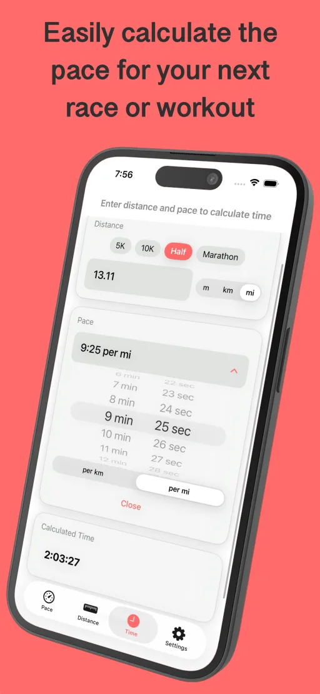
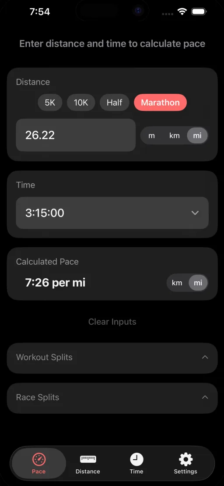
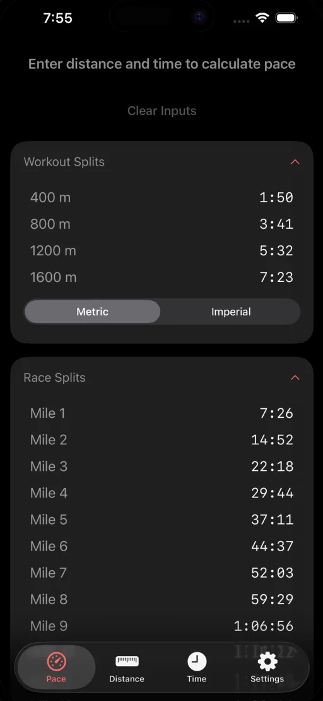

For runners, by runners
Know your pace.
Crush your goals.
No bloat. No subscriptions. Just a beautifully simple calculator for pace, time, distance, and splits. Because math shouldn't slow you down.
Not on iPhone? Use the free web pace calculator →
See it in action



Features
Pace Calculator
Calculate your pace, time, or distance. Enter any two values and get the third instantly.
Workout Splits
Plan your training with detailed workout splits for intervals, tempo runs, and more.
Race Splits
Get mile-by-mile or kilometer splits for any race distance from 5K to ultramarathon.
Free running pace tools
No download needed. Calculate your pace on the web or look up your goal pace in a chart.
Frequently Asked Questions
How do I calculate my goal running pace?
Enter your total time and distance in Simple Pace, and the app instantly calculates your pace in minutes per mile or kilometer. For example, if you ran 5 miles in 40 minutes, your pace is 8:00 per mile.
What race distances does Simple Pace support?
Simple Pace supports all common race distances including 5K, 10K, half marathon, marathon, and ultramarathon distances like 50K and 100 miles. You can also enter any custom distance.
Can I get splits for my upcoming race?
Yes! Simple Pace provides mile-by-mile or kilometer-by-kilometer splits for any race distance. This helps you plan your pacing strategy and stay on target during your race.
How much does Simple Pace cost?
Simple Pace is just $0.99 in the U.S. with no ads, no subscriptions, and no hidden fees. Pay once and enjoy a clean, distraction-free pace calculator forever.
Does Simple Pace work offline?
Yes! Simple Pace works completely offline. All calculations are done on your device, so you can use it anywhere - at the track, on trails, or at the starting line.
Ready to run?
Download Simple Pace and start planning your runs today.